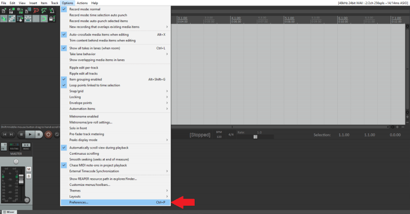
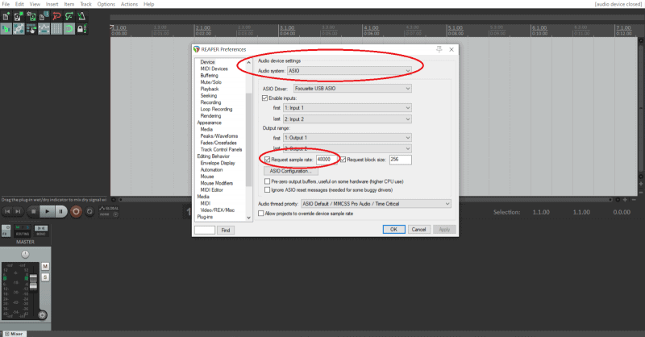
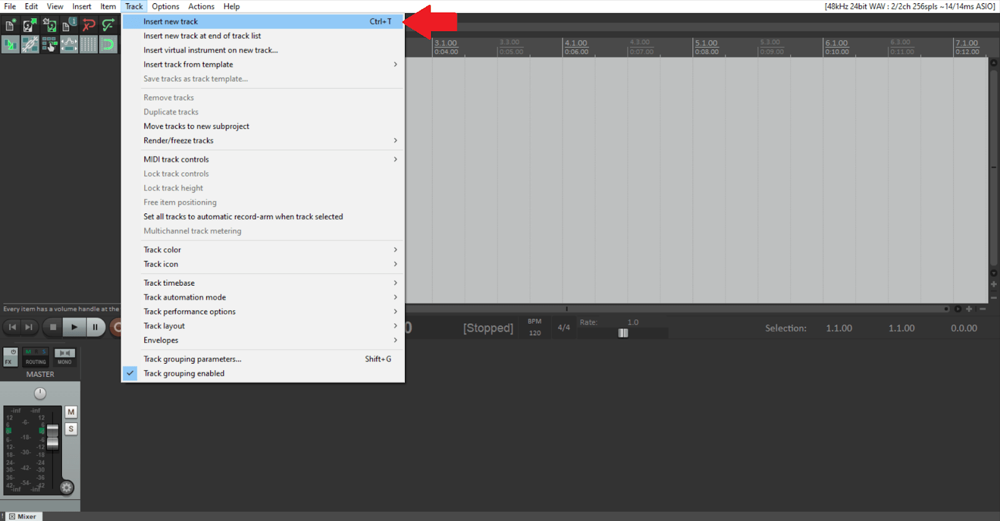

REAPER requires only a couple things to get started, the correct operating system, an audio interface, headphones and a microphone(If you plan on recording your own audio).
Recommendations:
| Operating System | Audio Interfaces | Headphones | Microphone |
|---|---|---|---|
| Windows 7/8/10 | Focusrite Scarlett 2i2 | Sony MDR-7506 | Rode NT-USB |
| macOS X 10.5-10.14 | PreSonus AudioBox USB 96 | Audio-Technica ATH-M50X | Behringer TM1 |
| Linux x86_64 | Behringer U-Phoria UMC404HD | Sony MDR7506 | Shure SM7B |
You'll need to install the software and drivers for your specific audio interface. The product should have instructions to do so.
Once everything is installed open REAPER and goto Options -> Preferences and setup your audio device settings.

For this tutorial I am using the Focusrite Scarlett 2i2, because of this I chose ASIO.

I also changed my sample rate from 44.1 kHz to 48 kHz because it will sync audio with video much better. If you don't need to sync it with video 44.1 kHz is perfectly okay.
After this setup we are now ready to create a track. A track is essentially the container where we keep our music.
To start, goto the Track menu in the top-left corner to the left of the options menu we used earlier.
You can also hit Ctrl+T on Windows or Command+T on Mac.

"Insert new track" will add an audio track you can record either instruments or vocals on. "Insert virtual instrument on new track"
Once the track is inserted make sure your input settings are correct.
You're able to choose the input settings on the left hand side. The options are: